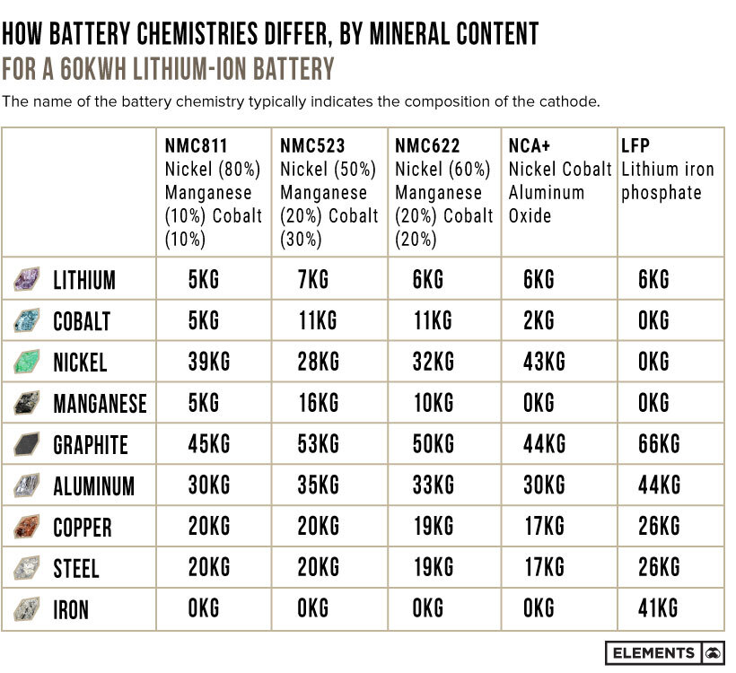
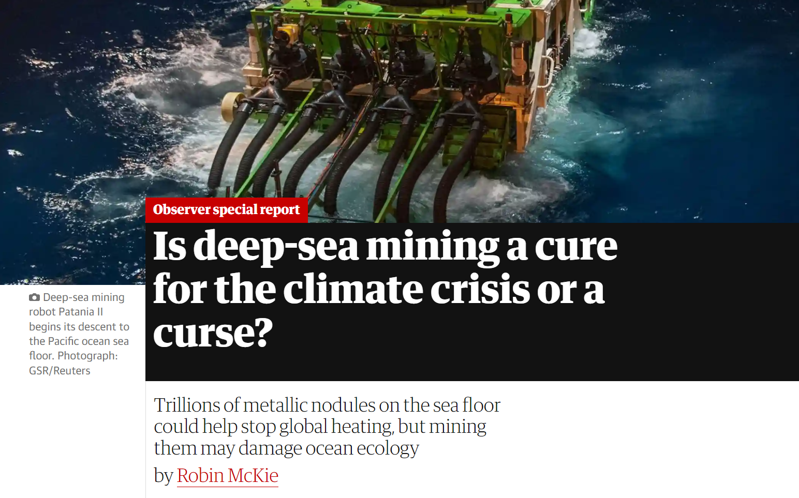

Introduction to Offshore Process Engineering
Why Offshore Process Engineering?
The offshore environment is one of the toughest, not only must designs work, they must:
- Work reliably with little/no maintenance: staffing/access/resources are hard.
- Be lightweight: Structures can only take so much load, don't forget liquid weight too!
- Be safe even under failure: Escape into the ocean is difficult, system must fail safe.
- Work anywhere: Subsea process engineering is an extreme area.
- Small margins for overdesign: All costs are high, forcing efficiency.
These pressures force innovation, and offshore engineering leads and has led the way for much of the development of process engineering. We have learnt so much from this work.
Past: Safety lessons are written in blood
Future: Digital twin engineering
GDi in Aberdeen is working with Aberdeen Uni to automate process engineering from laser scans like this. Making digital twins of offshore assets for inspection, design, and engineering.
Transition to Net-Zero:
Is offshore now irrelevant?
- Much of this course will be about Upstream Oil and Gas processing and ≈70% of oil and gas production is for energy. Is this course still relevant?
- Most
oilenergy companies are touting net zero targets (e.g., BP, Total Energy, Shell 2050). - UK Government has banned ICE car sales from 2030, hybrids banned from 2035.
- Carbon as a energy source is not tenable, but not only because of CO2 emissions...
- ...Its too expensive!

- So the climate crisis is being solved via the strongest forces known to man, capitalism, and the sun. Does this mean offshore hydrocarbon extraction is obsolete?
- NO. We will always need raw feedstocks of materials to continue to develop and improve humanity and the world. I'll try to explain this in the short and long term.
- Short term, shortages of materials can lead to unusual dynamics. For example, growing bioethanol crops for petrol/vegtable oil for diesel directly competes with food! Have you noticed that sunflower oil tracks diesel prices? All nations rely on cheap food (and clothes, etc.) to allow time for more advanced work, like education/research.
- We need a rapid transition to sustainable industry, but it must be a transition to prevent "larger" harm from competition.
- Another example, batteries, at least in the short term, appear to be the solution to transient renewable power, what do we need for these?
LFP batteries are very promising, but other chemistries are more performant and need cobalt/nickel/magnanese.
Captured from www.mining.com/web/the-key-minerals-in-an-ev-battery/ on 27/09/2022

- Offshore engineering in general is an expanding field with offshore wind and mining.
- Offshore technology will also play a role in the transition through energy storage (i.e., hydrogen in underground reservoirs), or CO2 sequestration in offshore underground brine formations, which is upstream oil and gas processing in reverse.
- Interstingly, release of CO2 must not only be stopped, it must be reversed. We have already "committed" to a sea level rise from our existing total emissions.
-
"We estimate median sea-level rise between 0.7 and 1.2 m, if net-zero greenhouse gas emissions are sustained until 2300, varying with the pathway of emissions during this century. Temperature stabilization below 2 °C is insufficient to hold median sea-level rise until 2300 below 1.5 m."
Mengel, M., Nauels, A., Rogelj, J. et al. Committed sea-level rise under the Paris Agreement and the legacy of delayed mitigation action. Nat Commun 9, 601 (2018). - Do we want to clean this up?
Land below tide by 2050, medium luck
(click here for your own simulation)- Long term, we need technology and resources to be able to more generally terraform earth to ensure it is a garden for all life. Preservation, expansion, and diversification of all life should be our goal.
- Just human life is still a big challenge for us, consider Food security.
- "...we estimate,
that by 2000, nitrogen fertilizers were
responsible for feeding 44% of the world’s
population. Our updated estimate for
2008 is 48% — so the lives of around
half of humanity are made possible by
Haber–Bosch nitrogen."
J W Erismanet al, Nat. Geosci., 2008, 1, 636 (DOI: 10.1038/ngeo325) - Industrialization is now a basic necessity for half of humanity.
- The transition is needed here too. The Haber–Bosch uses methane to provide hydrogen to "fix" nitrogen into ammonia (CH4). Technology can generate green hydrogen for this process from electrolysis if we have sufficient clean energy.
- We could also still use methane for the hydrogen, and store the CO2 or make carbon products out of it.
- Technology may be able to solve all our problems (it has done so far), but only if we have resources and sound, safe, sustainable engineering.
Long term, our problems may be very big in scale. You may not like Jeff Bezos (below), or Elon Musk, but they're right about space possibly solving earth problems. Space is full of space, minerals, energy, and adventure.
- Finally, have we reached peak oil? How affected is production by oil and gas price? How long will Aberdeen have a offshore industry?
Peak oil might have happened, but not peak hydrocarbons...
Methane production is rocketing up, and will be made even worse by the recent price hikes.
Unfortunately, oil and gas use is still massively prevalent. It looks like Aberdeen's industry is safe, even our historical crises have barely dented production.
Learning objectives
- Offshore engineering in the Upstream Oil & Gas industry has a lot to teach us about efficient, safe, and optimized process engineering design due to its challenges.
- Many techniques and specialized knowledge can be applied to other issues, like underground CO2 storage, subsea mineral extraction, offshore wind (offshore structures), storage of gas/hydrogen (Aldbrough gas storage site could be converted to hold hydrogen).
- We need to take a broader, data-driven approach to solving problems, nothing is ever straightforward.
- This course is still under (re)development. I will happily hear suggestions on where it should be broadened out, and what topics it might be transferred to.
Course outline
Ten modules
- Phase behavior and physical properties
- Wells and fluid flow
- Oil, gas, and water separation
- Produced water treatment
- Gas compression
- Gas treatment
- Flow assurance
- Hydrates, wax, and erosion
- Energy efficiency
Water injection
| EG503J | EG503K | Format | |
| Mid-term | Online | Online | Modules 1-5 |
| Final | In-person | Online | Modules 1-10, focus on 6-10 |
1.5 hour exams, attempt all questions:
Comments on the course
- The course is designed to allow you apply the UG chemical engineering skills you should already have developed. MSc students, the calculations should not be outside your skill set but may take some additional learning.
- Please engage and discuss. All of you on the MEng programme could have graduated last year with a BEng (and many on the MSc already did), you’re already qualified engineers, lets have technical discussions.
- Question what you see, the upstream industry is huge and complex, not all of it can be presented in slides.
- No topic is off limits. There is a lot of material – you will need to keep up with the tutorials.
- You will use UniSim/Aspen/HYSYS for some of the tutorial problems. You can access this via vdi.abdn.ac.uk.
Tutorials
- Weekly tutorials (see booklet in the menu, bottom-left) are where questions will be reviewed and discussed. The following week the tutorial model answers will be reviewed. Attempt the tutorials, don’t just read the answers – there is a lot of learning in struggling with a problem.
- Notes and tutorials are already posted but will be updated continuously (there’s always something new that people struggle with, or minor errors and ways to improve).
- Mix of units – this is deliberate as unfortunately many oil and gas regions still use Imperial/American units (take a look at Python’s pint library). The world is not ideal yet despite our best attempts…
Extra-Curricular
- Former student, Lewis Sinclair, presenting on behalf of Micropack, flame detection on how it works (including live demo).
- Guest lecture from Prof. Tom Baxter, Wednesday 15th November, on either the hydrogen economy or CCS.
- Potential - Former student Craig Moir @ GDi will give a presentation (TBC) on their new technology, and how it is being applied across more industries.
- We can try to organise a visit to the NESS Energy Project (the new incinerator in Tullos). Its an excellent example of some of the compromises both good and bad of the energy transition. But the visit needs commitment, and has a max of 10 people.
- Site visit to our own Aberdeen Uni. CHP plant?
- Where guest lectures interfere with timetabled sessions, we'll rely on recorded lectures.